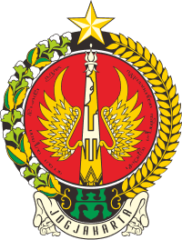

<div class="h-auto bg-white-jogja p-32 flex justify-center items-center relative overflow-hidden">
    
    <div class="w-3/4">
        <div id="header-content" class="p-10"> 
            <div class="mb-5 rounded inline-block bg-red-jogja border-orange border-l-8 p-2 pl-6 text-2xl font-bold text-white pr-6">
                <span lang="id">Sekilas Jogja</span>
                <span lang="en">Jogja at a glance</span>
            </div>           
            <div class="pt-3" id="title">
                <h1 class="text-5xl font-bold">
                    <span lang="id">Daerah Istimewa Yogyakarta</span>
                    <span lang="en">The Special Region of Yogyakarta</span>
                </h1>
            </div>
        </div>
        <div id="content" class="font-light border-l-2 border-orange pt-4 p-10 pb-5">
            <div lang="id">
                <p class="text-sm">Daerah Istimewa Yogyakarta (DIY) adalah provinsi tertua kedua di Indonesia setelah Jawa Timur, yang dibentuk oleh pemerintah negara bagian Indonesia. Provinsi ini juga memiliki status istimewa atau otonomi khusus.  Dengan jumlah penduduk sebanyak 3,84 jiwa (2019) dan luas wilayah 3.842,8 kilometer persegi, DIY merupakan daerah setingkat provinsi yang paling kecil setelah Daerah Khusus Ibu Kota (DKI) Jakarta. DIY terletak di bagian selatan Pulau Jawa, berbatasan dengan provinsi Jawa Tengah dan Samudera Hindia.</p>
                <p class="pt-7 text-sm">DIY diperintah oleh gubernur yang juga di sebut sri sultan dalam bahasa sehari-hari. Saat ini, Gubernur DIY adalah Sultan Hamengku Buwono X dengan Wakil Gubernur Sri Paku Alam X.  Kekhasan dari pemerintahan DIY terletak dalam pengisian jabatan gubernur dan wakil gubernur. Salah satu syarat calon gubernur DIY adalah bertahta sebagai Sultan Hamengku Buwono sedangkan syarat calon wakil gubernur DIY adalah bertahta sebagai Adipati Paku Alam.  Mereka juga tidak terikat oleh periodisasi masa jabatan.</p>
                <p class="pt-10 text-sm">Wilayah DIY memiliki 5 kabupaten, meliputi : </p>
                <ol class="pb-14 text-sm list-decimal pl-5">
                    <li>Kabupaten Kota Yogyakarta</li>
                    <li>Kabupaten Sleman</li>
                    <li>Kabupaten Bantul </li>
                    <li>Kabupaten Gunung Kidul</li>
                    <li>Kabupaten Kulon Progo</li>
                </ol>
            </div>
            <div lang="en">
                <p class="text-sm">The Special Region of Yogyakarta (DIY) is the second oldest province in Indonesia after East Java, which was established by the Indonesian state government. This province also has special status or special autonomy. With a population of 3.84 people (2019) and an area of ​​3,842.8 square kilometers, DIY is the smallest province-level area after the Special Capital Region (DKI) Jakarta. DIY is located in the southern part of Java Island, bordering the provinces of Central Java and the Indian Ocean.</p>
                <p class="pt-7 text-sm">DIY is ruled by a governor who is also called sri sultan in everyday language. Currently, the Governor of DIY is Sultan Hamengku Buwono X with Deputy Governor Sri Paku Alam X. The peculiarity of the DIY government lies in filling the positions of governor and deputy governor. One of the requirements for a candidate for governor of DIY is to reign as Sultan Hamengku Buwono while the condition for a candidate for deputy governor of DIY is to reign as Duke of Paku Alam. They are also not bound by the periodization of the term of office.</p>
                <p class="pt-10 text-sm">DIY Region has 5 districts, including: </p>
                <ol class="pb-14 text-sm list-decimal pl-5">
                    <li>Yogyakarta City District</li>
                    <li>Sleman Regency</li>
                    <li>Bantul Regency </li>
                    <li>Gunung Kidul Regency</li>
                    <li>Kulon Progo Regency</li>
                </ol>
            </div>
             
            
            
            
            
            <div class="bg-gradient-linear-gold rounded-full inline-block p-2 pl-5 pr-5 font-bold text-white">
                <span lang="id">Lambang Negara</span>
                <span lang="en">Regional Symbol</span>
            </div>
            <div class="p-14 flex justify-center">
                
            </div>                
            <div class="bg-gradient-linear-gold rounded-full inline-block p-2 pl-5 pr-5 font-bold text-white">
                
                <span lang="id">Gubernur</span>
                <span lang="en">Governor</span>
            </div>
            <div class="grid grid-cols-3 gap-24 p-7 pt-14 pl-0 pr-0">
                
                <div class="col-span-2 grid grid-cols-1 gap-4">
                    <div>
                        <div class="text-sm font-bold pb-4">
                            <span lang="id">Nama</span>
                            <span lang="en">Name</span>
                        </div>
                        <div class="text-sm font-light">BRM. Herjuno Darpito ( Sri Sultan Hamengkubuwana X )</div>
                    </div>
                    <div>
                        <div class="text-sm font-bold pb-4">
                            <span lang="id">Gelar</span>
                            <span lang="en">Title</span>
                         </div>
                        <div class="text-sm font-light">Ngarsa Dalem Sampeyan Dalem Hingkang Sinuhun Kanjeng Sultan Hamengku Buwono, Senapati Hing Ngalaga Ngabdurrahman Sayidin Panat Agama Kalifatullah Hingkang Jumeneng Kaping Sedoso</div>
                    </div>
                    <div>
                        <div class="text-sm font-bold pb-4">
                            <span lang="id">Jenis Kelamin</span>
                            <span lang="en">Gender</span>
                        </div>
                        <div class="text-sm font-light">
                            <span lang="id">Laki - Laki</span>
                            <span lang="en">Male</span>
                            
                        </div>
                    </div>
                    <div>
                        <div class="text-sm font-bold pb-4">                            
                            <span lang="id">Umur</span>
                            <span lang="en">Age</span></div>
                        <div class="text-sm font-light">
                            <span lang="id">75 Tahun</span>
                            <span lang="en">75 Years Old</span>
                            </div>
                    </div>
                </div>
            </div>
        </div>
    </div>
</div>